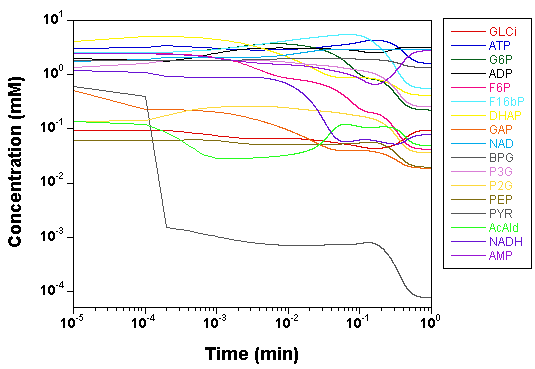
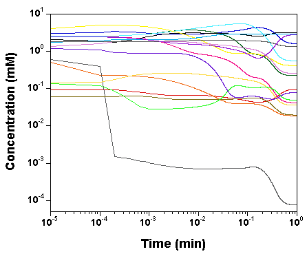
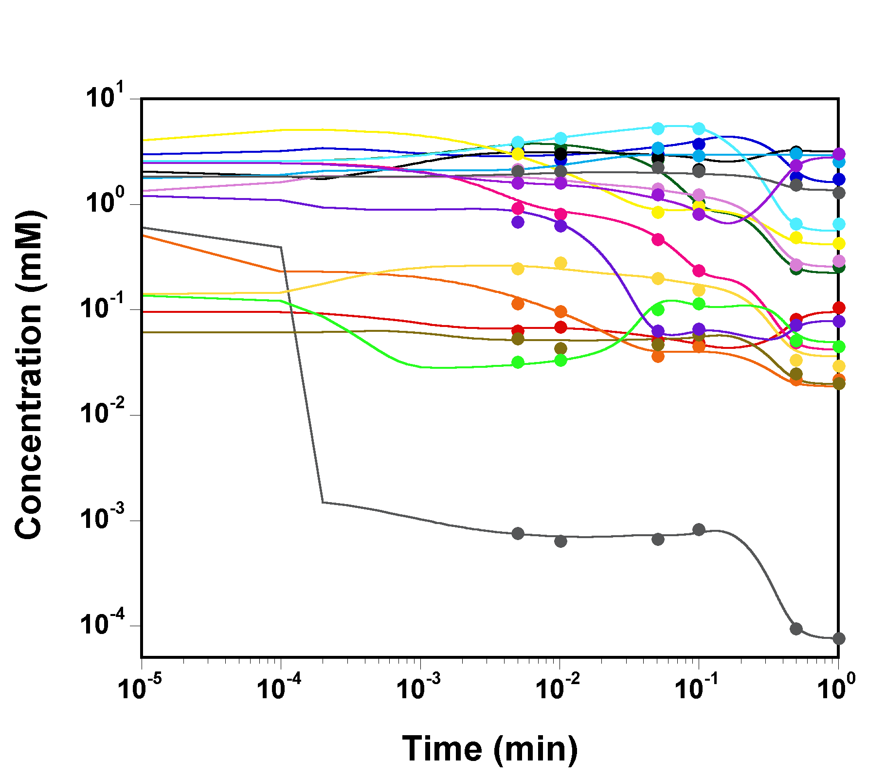
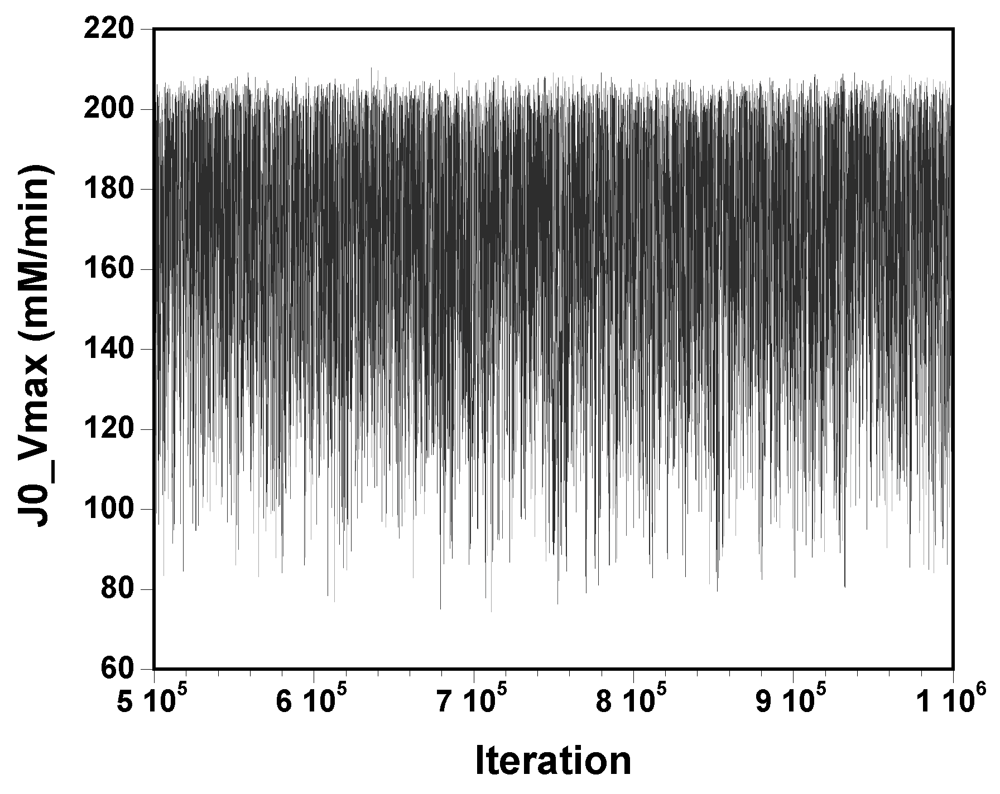
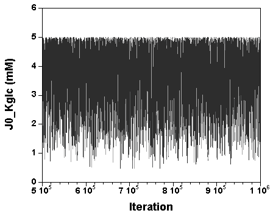
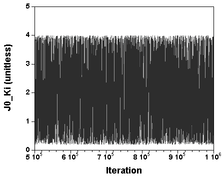
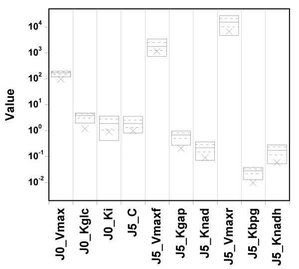
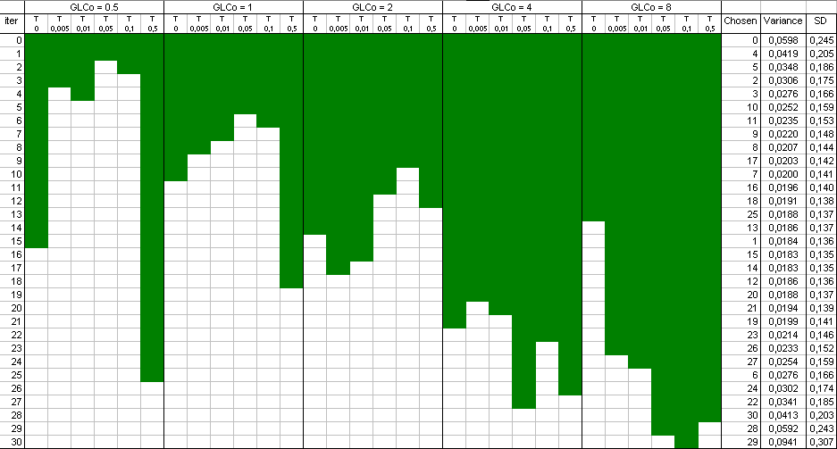
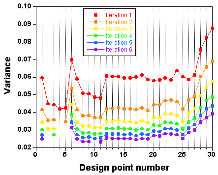

To check that the model is correctly read and converted in C by GNU
MCSim,
we plot the time courses of the concentrations of the
various model species, as computed by SBW 2.7.8 and GNU
MCSim.
Those simulations were obtained with the "true"
parameter values.
Here is the MCSim input file used
for those simulations.
The two software give the same results, with only rounding error
differences.
 
Figure 2: Simulation of the time course of all model species with SBW 2.7.8 (left) and with GNU MCSim 5.3.0 (right).

Three files (1,
2,
3)
were used to start the Markov chains with component by component
sampling.
In those files, rather wide parameters' prior distributions are
specified for 10 parameters (the others are left to their true value):
The lower bound is a factor of about 4 below the true value and the
upper bound a factor 4 above.
The data likelihood is assumed lognormal, with
a geometric SD corresponding to a CV of about 10%.
The 3 next files (A,
B,
C)
were used to finish the Markov chains, by vectors sampling.
The
outputs of the previous simulations is read in and used to construct a
multivariate normal jump kernel, further refined in size to tune the
acceptance rate.
These three files
(A.log,
B.log,
C.log)
captured the messages sent by the program when running.
After a million iterations, the first thing to do is to check the
convergence of the 3 chains run in parallel:
Here is the output of
a script running Gelman's R diagnostic
(on that diagnostic see Gelman A., et al., 1995,
Bayesian Data
Analysis, London, Chapman & Hall).
The script also gives a summary of the
marginal parameters' posterior distributions.
The three chains have merged and mix well, but it is always useful to check visually the convergence by forming such plots:



However, univariate plots and statistics do not describe the full
picture of the joint posterior probability distribution of the
parameters.
It is very useful to examine the correlations between
parameters.
The following Table gives the lower half of the correlation matrix of
the 30000 parameter vectors
sampled at convergence (with only the the
correlation coefficients higher than 0.1 in absolute value):

We can see a very strong correlation between J0_Vmax
and J0_Kglc (that is actually why we needed to perform
vector sampling to reach
convergence, component by component sampling was mixing very slowly).
Here is a plot of J0_Kglc versus J0_Vmax:
.png)
The above correlation is quite bad news. The estimates of the two
J0_Vmax and J0_Kglc seem unbounded from above
and wander
quite far from their (expected) true values (97.24 and 1.1918,
respectively; see
the true values here).
The true value and box summaries of the percentiles of the marginal
posterior
distribution of each parameter are shown in the next
Figure:

Figure 6: Percentile plot (5th, 25th, 50th, 75th and 95th percentiles) of the posterior sampleWe can see that the true values can fall below the 5th percentile of the posterior estimates, in particular for the first two parameters.
What does the fit to the data look like?
Here is a plot of observed
versus predicted data values
(input file,
run "C" file (gzipped), and
output file here):

The fit to the data is excellent, despite the fact that the parameter
vector used to produce that plot was just
randomly sampled from the
joint posterior distribution (the last sample of run "C" is nothing
special).
Obviously, we also have the exact model, but still, we
attempted the calibration of 10 parameters simultaneously.
Now, back to the correlation observed in Figure 5: it does not affect
the fit to the data.
(Note that the values of J0_Vmax
and J0_Kglc in the parameter vector used to generate Figure 7
are 186.125 and 4.29029,
respectively, well above their true values. So the good fit in Figure 6 is not due
to "good" values of those parameters).
Therefore, the data probably do not give enough
information about those parameters taken individually.
We have a
parameter identifiability problem on the hands... Or do we?
Let's try setting narrow priors: +/- 10% around the true values, and see what happens.
I spare you the whole set of diagnostic plots, but it turns out that in
that case,
the parameter values are well identified, and the fit is
still excellent.

So, GNU MCSim is not systematically biasing the sampling. The
identifiability problem must be real.
The only way to overcome it is to collect new data, and we will now
use GNU MCSim can help us design an efficient experiment.
We aim at better identifying J0_Vmax and J0_Kglc, only
(we will not deal with the other parameters).
We first need to obtain a sample of values for those two
parameters. We will use for that the posterior sample contained in
the
MCMC chain "C"
output file (this is
logical, because we will still make use in the end of the initial
experiment, so we should
take into account the information it bring,
even if not perfect). We could also have started from prior
distributions and used any
software you like to produce a sample of J0_Vmax, J0_Kglc,
values.
We then write an
input file for the design
optimization runs. We urge you to browse the
online users' manual to understand the
layout of that file. The design space is a grid of glucose (GLCo)
initial values and sampling times.
GNU MCSim checks
sequentially the various points of the design grid and selects at each
step the one giving the lowest total variance
for the estimands
(importance reweighting is used to update the given prior with
prospective data).
The
result
is a selection of design points which approximate an optimal design. The raw result file is not really nice to look at,
and a Table and a plot like these ones are preferable:
 
You can see that, at the early steps, only time points from the low dose experiment are included, except time zero and the last time.
Points have been added one after the other ("forward" mode). You can
also start with a full design and remove the least informative points
one by one ("backward" mode).
This is all good looking, and reasonable, but it's all in expectation. We will now check the proposed design.
Files P1,
P2, and
P3 use the baseline
experiment and the new one to recalibrate the model from the
start,
with component by component sampling. The same 10
parameters are sampled, with wide priors as before.
We just use the
last values sampled by chains A, B, and C as starting points.
It is absolutely exhilarating to watch the values of J0_Vmax and
J0_Kglc, starting from a point in the previous posterior distribution,
move to a new one, much better,
and actually centered around the true values.
The XMCsim tools allows you to see that in real time:


Adding the new experiment's data does improve dramatically the posterior
estimates of J0_Vmax and J0_Kglc.
Files
PA,
PB, and
PC
were used to finish the Markov chains, by vectors sampling.
After convergence of the 3 news chains, we can form a new
summary of the
marginal parameters' posterior distributions.
The posterior estimates of the 7 last parameters have not improved
much, but the additional experiment was not designed to do so...
The estimates of J0_Vmax and J0_Kglc are much better now:
_nice.png)
In conclusion, it seems that an additional experiment
at low glucose concentration and for a few time points would bring
enough data to greatly improve our parameter estimates.
But have we done the best possible job in the last analysis?
GNU MCSim allows you to define levels in your statistical
model. Please refer to the
online users' manual to understand the
construction of Levels {}
in a GNU MCSim simulation input file.
Files H1,
H2, and
H3 define a 2-level
model (yeast as a species, and two sub-populations with an experiment on
each one).
They instruct for recalibration of the the model from the start, with
component by component sampling. The same 10 parameters are
sampled,
with wide priors, as before.
Again, we get to convergence but running 1 million MCMC simulations in
Metropolis mode (whole vector sampling).
This requires about 2 millions
model evaluations, but our compiled code
runs very fast... (about 90 minutes per chain on an i686 machine
clocked at 3.6 GHz). Files
PA,
PB, and
PC
were used to that effect.
After convergence, we compute a new
summary of the
marginal parameters' posterior distributions.
Well, everything has degraded... The model has improved, but not the
results!
The estimates of J0_Vmax and J0_Kglc at the population leve
are quite uncertain and higher than the true values:
_population.png)
The fact that the population estimates are quite uncertain is expected: we
have only two sub-populations to characterize the whole population and
sampling uncertainty kicks in. The increased covariance and bias is
disappointing, but think a minute: each sub-population has its own set of
paramters
estimated from one experiment at only one dose level. That will
produce a highly correlated and biased (barely bounded above) pair of
J0_Vmax and
J0_Kglc estimates for each sub-population. Two badly identified
sub-populations do not make for a superb population estimate (at least not
with
2 sub-populations only, but I suspect that the problem would persist
with one thousand sub-populations.
The conclusion here is that if genetic variability is expected across
experiments, then the new experiment needs to include several dose levels
(in essence,
the first experiment has to be redone with the yeast
population used for the second experiment). This is actually very useful
information,
all gathered in a few hours of computing, preliminary to long
and expensive real life experiments.
I hope that you enjoyed as I did the peripeties of this model analysis...